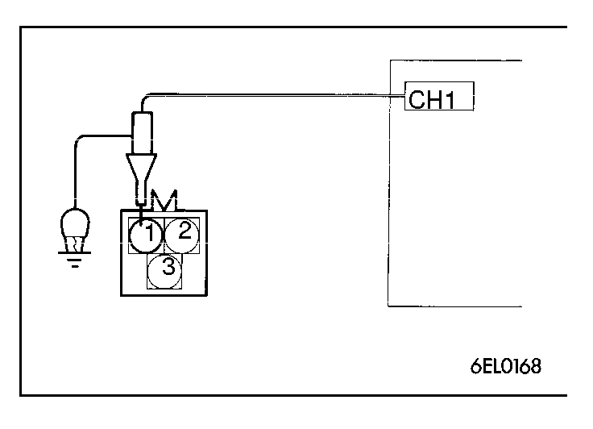
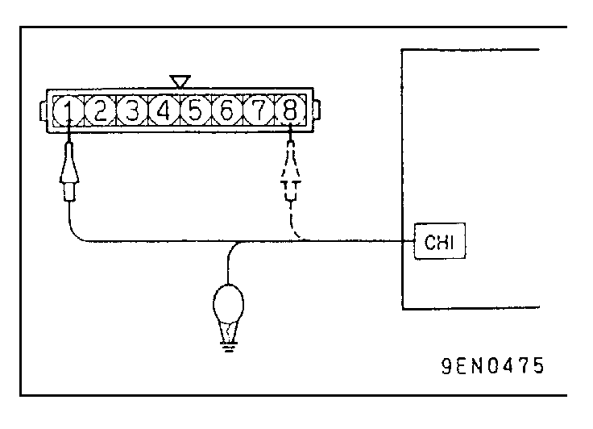
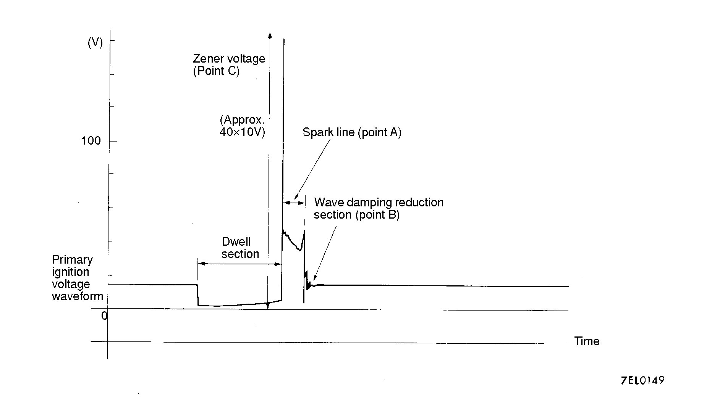
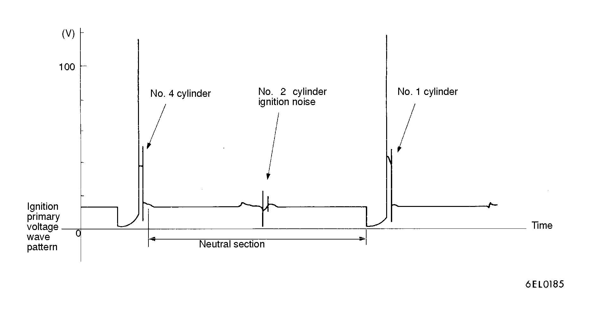
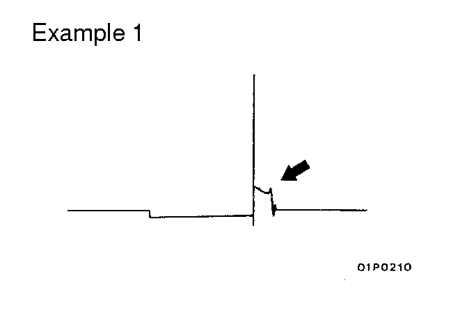
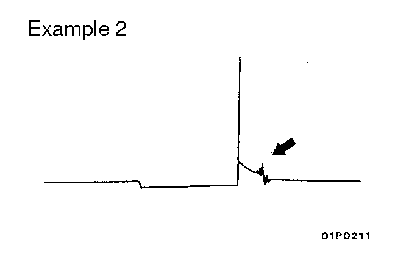
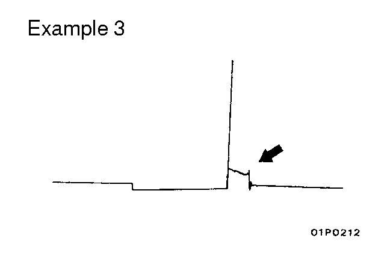
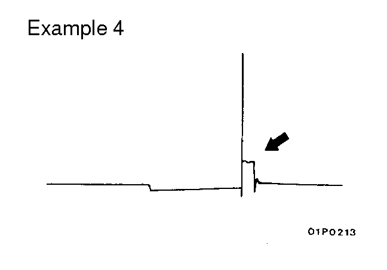
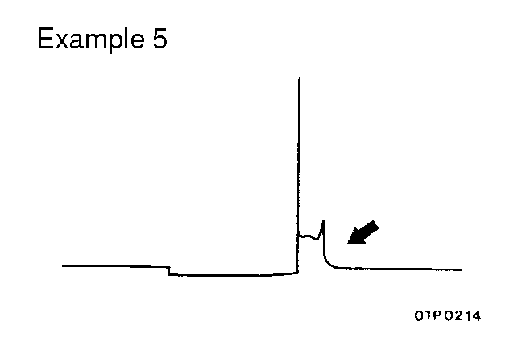

![[Previous]](https://mitsubishitechinfo.com/data/F24S/BUTTONS/fprevg.png)
![[Next]](https://mitsubishitechinfo.com/data/F24S/BUTTONS/fnextg.png)
|
 |
IGNITION PRIMARY VOLTAGE WAVEFORM CHECK <2.0L Engine (Turbo)> (1)Disconnect the ignition coil connector and connect the special tool (harness connector: MD998478) in between. (2)Connect the analyzer primary pickup to the ignition coil connector terminal 1 (black clip on the special tool) when observing the No. 2 - No. 3 cylinder group, terminal 2 (red clip) for the No. 1 - No. 4 cylinder group. (3)Connect the primary pickup earth terminal. (4)Clamp the spark plug with the trigger pickup. NOTE 1.Clamp the spark plug cable for No.1 and No.3 cylinders of the same group with the cylinder that is connected to the primary pickup. 2.The wave pattern of either cylinder in the same group will appear at the left edge of the screen. |
||||||||||||||||||||||||||||||||||||||||||||||||||||||||||||||||||||||||||||||
|
 |
<2.4L Engine> (1)Disconnect the ignition power transistor connector and connect the special tool (harness connector: MB991348) in between. (Connect all the terminals.) (2)Connect the analyzer primary pickup to the ignition power transistor connector terminal 8 when observing the No. 1 - No. 4 cylinder group, terminal 1 for the No. 2 - No. 3 cylinder group. (3)Connect the primary pickup earth terminal. (4)Clamp the spark plug with the trigger pickup. NOTE 1.Clamp the spark plug cable for No.1 and No.3 cylinders of the same group with the cylinder that is connected to the primary pickup. 2.The wave pattern of either cylinder in the same group will appear at the left edge of the screen. |
||||||||||||||||||||||||||||||||||||||||||||||||||||||||||||||||||||||||||||||

FUNCTION
SECONDARY
PATTERN HEIGHT
HIGH (OR LOW)
PATTERN SELECTOR
RASTER
Engine revolutions
Curb idle speed
Observation Conditions (The only change from above condition is the pattern selector.)
| PATTERN SELECTOR | DISPLAY | ||||||||||||||||||||||||||||||||||||||||||||||||||||||||||||||||||||||||||||||

| Spark line | Plug gap | Condition of electrode |
Compression force |
Concentration of air mixture |
Ignition timing |
High tension cable |
|||||||||||||||||||||||||||||||||||||||||||||||||||||||||||||||||||||||||
| Length | Long | Small | Normal | Low | Rich | Advanced | Leak | ||||||||||||||||||||||||||||||||||||||||||||||||||||||||||||||||||||||||
| Short | Large | Large wear | High | Lean | Retarded | High resistance | |||||||||||||||||||||||||||||||||||||||||||||||||||||||||||||||||||||||||
| Height | High | Large | Large wear | High | Lean | Retarded | High Resistance | ||||||||||||||||||||||||||||||||||||||||||||||||||||||||||||||||||||||||
| Low | Small | Normal | Low | Rich | Advanced | Leak | |||||||||||||||||||||||||||||||||||||||||||||||||||||||||||||||||||||||||
| Slope | Large | Plug is fouled | - | - | - | - | |||||||||||||||||||||||||||||||||||||||||||||||||||||||||||||||||||||||||
| Number of vibrations | Coil, condenser | ||||||||||||||||||||||||||||||||||||||||||||||||||||||||||||||||||||||||||||||
| 3 or higher | Except above | ||||||||||||||||||||||||||||||||||||||||||||||||||||||||||||||||||||||||||||||
| Normal | Abnormal | ||||||||||||||||||||||||||||||||||||||||||||||||||||||||||||||||||||||||||||||
| Height of Zener voltage | Probable cause | ||||||||||||||||||||||||||||||||||||||||||||||||||||||||||||||||||||||||||||||
| High | Problem in Zener diode | ||||||||||||||||||||||||||||||||||||||||||||||||||||||||||||||||||||||||||||||
| Low | Abnormal resistance in primary coil circuit | ||||||||||||||||||||||||||||||||||||||||||||||||||||||||||||||||||||||||||||||
| Abnormal waveform | Wave characteristics | Cause of problem | |||||||||||||||||||||||||||||||||||||||||||||||||||||||||||||||||||||||||||||
|
 |
Spark line is high and short. | Spark plug gap is too large. | |||||||||||||||||||||||||||||||||||||||||||||||||||||||||||||||||||||||||||||
|
 |
Spark line is low, long, and sloping. Also, the second half of the spark line is distorted. This could be a result of misfiring. |
Spark plug gap is too small. | |||||||||||||||||||||||||||||||||||||||||||||||||||||||||||||||||||||||||||||
|
 |
Spark line is low, long, and sloping. However, there is almost no spark line distortion. |
Spark plug gap is fouled. | |||||||||||||||||||||||||||||||||||||||||||||||||||||||||||||||||||||||||||||
|
 |
Spark line is high and short. | Spark plug cable is not properly connected, creating more than one spark from the plug |
|||||||||||||||||||||||||||||||||||||||||||||||||||||||||||||||||||||||||||||
|
 |
No waves in wave damping section | Layer short in ignition coil. | |||||||||||||||||||||||||||||||||||||||||||||||||||||||||||||||||||||||||||||